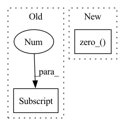

Pattern ID :37571
Before Change
////// call network inference
// manual pad for ffmlp
n = points.shape[0]
pad_n = 128 - (n % 128)
if pad_n > 0:
points = torch.cat([points, torch.zeros(pad_n, points.shape[1], device=points.device, dtype=points.dtype)], dim=0)
After Change
////// generate points (forward only)
if self.training:
counter = self.step_counter[self.local_step % 64]
counter.zero_() // set to 0
self.local_step += 1
force_all_rays = False
else:In pattern: SUPERPATTERN
Frequency: 4
Non-data size: 2
Instances Fragment ID: 108115505
Project Name: ashawkey/torch-ngp
Commit Name: 8288a9d35cc50591d8b0ca2509ec942f8fd47985
Time: 2022-02-18
Author: ashawkey1999@gmail.com
File Name: nerf/network_tcnn.py
M Class Name: NeRFNetwork
N Class Name: NeRFNetwork
M Method Name: run_cuda(7)
N Method Name: run_cuda(7)
M Parent Class: nn.Module
N Parent Class: nn.Module
M File Name: nerf/network_tcnn.py
N File Name: nerf/network_tcnn.py
M Start Line: 320
M End Line: 339
N Start Line: 324
N End Line: 341
Before Change
self.zero_point.data.copy_(_zero_point)
if self.fake_quant_enabled[0] == 1:
if self.learning_enabled[0] == 1:
if self.use_grad_scaling:
grad_factor = 1.0 / (self.weight.numel() * self.quant_max) ** 0.5
else:After Change
if self.fake_quant_enabled[0] == 1:
if self.qscheme in (torch.per_channel_symmetric, torch.per_tensor_symmetric):
self.zero_point.data.zero_()
if self.use_grad_scaling:
grad_factor = 1.0 / (X.numel() * self.quant_max) ** 0.5
else: Fragment ID: 108115504
Project Name: pytorch/pytorch
Commit Name: 0c60922fb0614132433779ad45ab8f30783db2ae
Time: 2021-02-03
Author: haichuan@fb.com
File Name: torch/quantization/_learnable_fake_quantize.py
M Class Name: _LearnableFakeQuantize
N Class Name: _LearnableFakeQuantize
M Method Name: forward(2)
N Method Name: forward(2)
M Parent Class: torch.quantization.FakeQuantizeBase
N Parent Class: nn.Module
M File Name: torch/quantization/_learnable_fake_quantize.py
N File Name: torch/quantization/_learnable_fake_quantize.py
M Start Line: 302
M End Line: 337
N Start Line: 127
N End Line: 155
Before Change
n = m.kernel_size[0] * m.kernel_size[1] * m.out_channels
m.weight.data.normal_(0, math.sqrt(2. / n))
elif isinstance(m, BinarizeConv2d):
n = m.kernel_size[0] * m.kernel_size[1] * m.out_channels
m.weight.data.normal_(0, math.sqrt(2. / n))
After Change
init.kaiming_normal_(m.weight)
elif isinstance(m, nn.BatchNorm2d):
m.weight.data.fill_(1e-8)
m.bias.data.zero_()
if bypass_last_bn:
for param in bypass_bn_weight_list:
param.data.zero_() Fragment ID: 108115507
Project Name: lmbxmu/rbnn
Commit Name: 57607e6cac17bb5e05c9225ce34a9885131e5fcf
Time: 2020-06-03
Author: 791411501@qq.com
File Name: cifar/models/resnet.py
M Class Name: ResNet
N Class Name: ResNet
M Method Name: __init__(11)
N Method Name: __init__(11)
M Parent Class: nn.Module
N Parent Class: nn.Module
M File Name: cifar/models/resnet.py
N File Name: cifar/models/resnet.py
M Start Line: 106
M End Line: 112
N Start Line: 106
N End Line: 111
Before Change
for m in self.modules():
if isinstance(m, nn.Conv2d):
n = m.kernel_size[0] * m.kernel_size[1] * m.out_channels
m.weight.data.normal_(0, math.sqrt(2. / n))
elif isinstance(m, BinarizeConv2d):
n = m.kernel_size[0] * m.kernel_size[1] * m.out_channelsAfter Change
init.kaiming_normal_(m.weight)
elif isinstance(m, nn.BatchNorm2d):
m.weight.data.fill_(1e-8)
m.bias.data.zero_()
if bypass_last_bn:
for param in bypass_bn_weight_list:
param.data.zero_() Fragment ID: 108115508
Project Name: lmbxmu/rbnn
Commit Name: 884e971cad61a2aad861474142b8744e2cc06325
Time: 2020-05-27
Author: 791411501@qq.com
File Name: imagenet/models/resnet.py
M Class Name: ResNet
N Class Name: ResNet
M Method Name: __init__(11)
N Method Name: __init__(11)
M Parent Class: nn.Module
N Parent Class: nn.Module
M File Name: imagenet/models/resnet.py
N File Name: imagenet/models/resnet.py
M Start Line: 105
M End Line: 111
N Start Line: 106
N End Line: 113